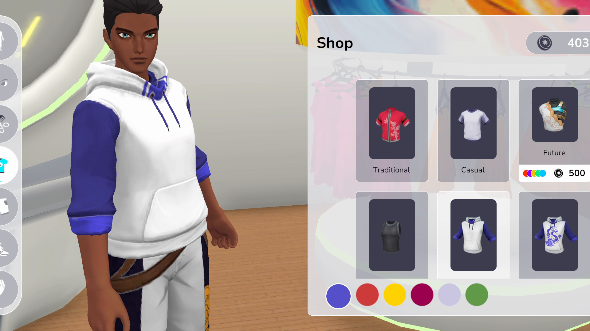
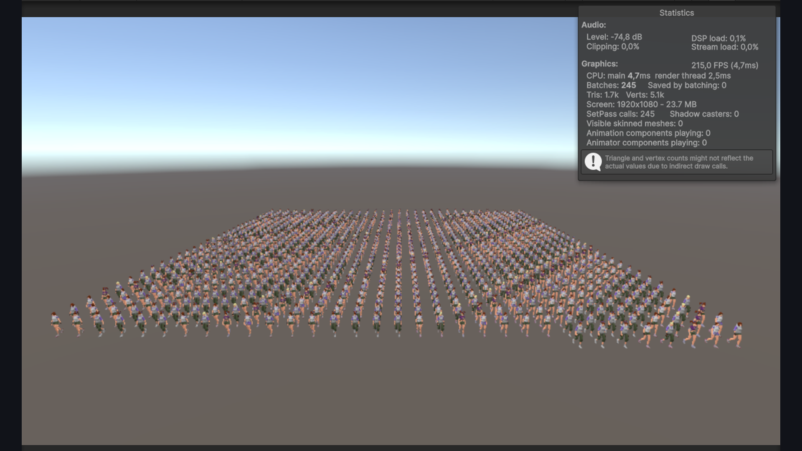
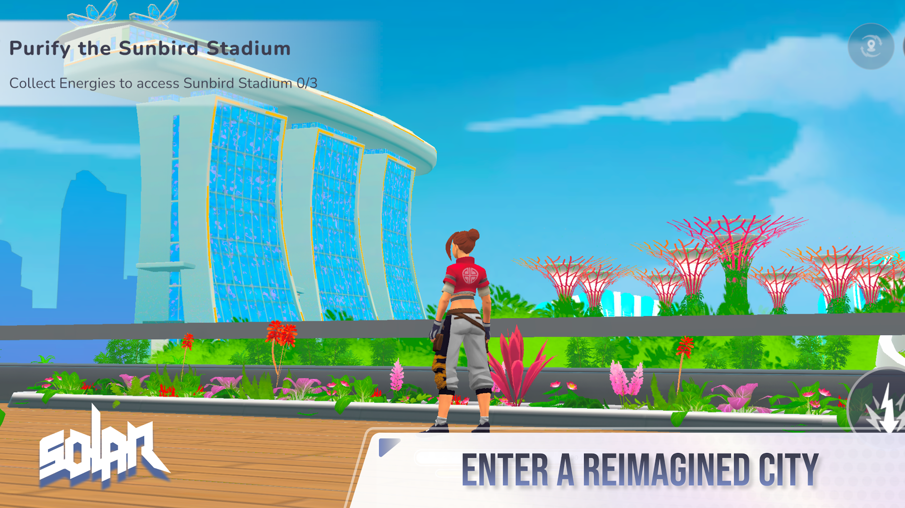
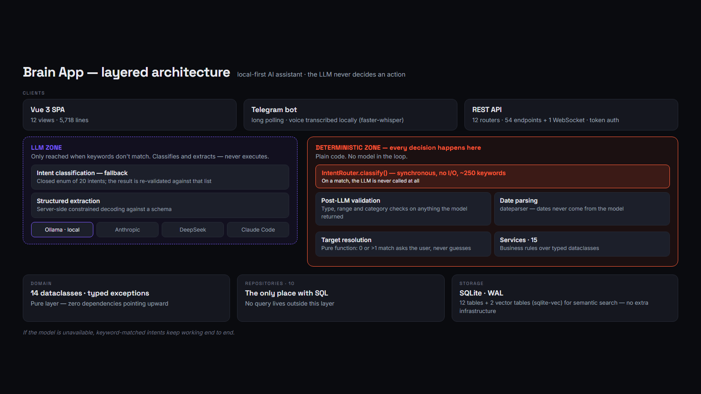

Make slow & repetitive work disappear
Custom editor windows and automation that turn error-prone setup into fast, validated workflows, inside Unity and outside it.

Senior Unity Developer in studio teams since 2023. Until September 2026 I was on SOLAR, a live free-to-play mobile game, where I owned the character dressing system. I also lead the technical direction of Waxy, a 3D puzzle-platformer.
Custom editor windows and automation that turn error-prone setup into fast, validated workflows, inside Unity and outside it.
Inventory, equipment, data-driven content: modular architecture that's easy to extend, and that the rest of the team can work on safely.
If it only runs well in the editor, it doesn't count. I profile real builds on mid-range phones and fix what they show, with the Jobs System, Burst and render tuning.
The approach, the tools, and what I actually built.

Node-graph garments, an in-game coin shop backed by the API, and 8 authoring tools. The same data dresses the player and the crowd.
Owned end-to-end
GPU skinning with a custom Vertex Texture Animation (VAT) baker, draws grouped by mesh.
10 → 200 fps
Ported Rollgeon to mobile and added full controller support, and I keep contributing as it grows.
Mobile + gamepad
Live geolocation/AR game on Google Play & the App Store.

3D puzzle-platformer, selected for the ADVA MPVP program.

Local-first AI assistant: the LLM understands what you ask, and deterministic code does the work.
I'm available now for Senior Unity Developer roles, remote, worldwide.